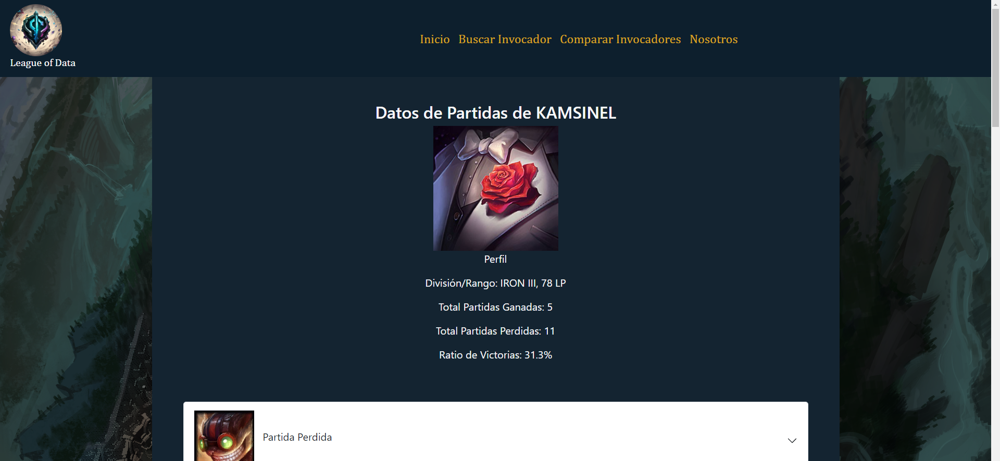
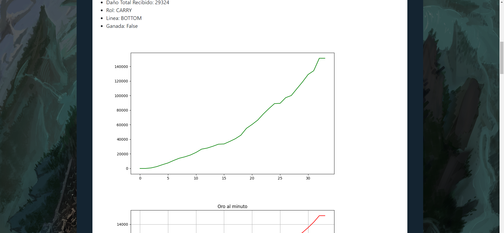
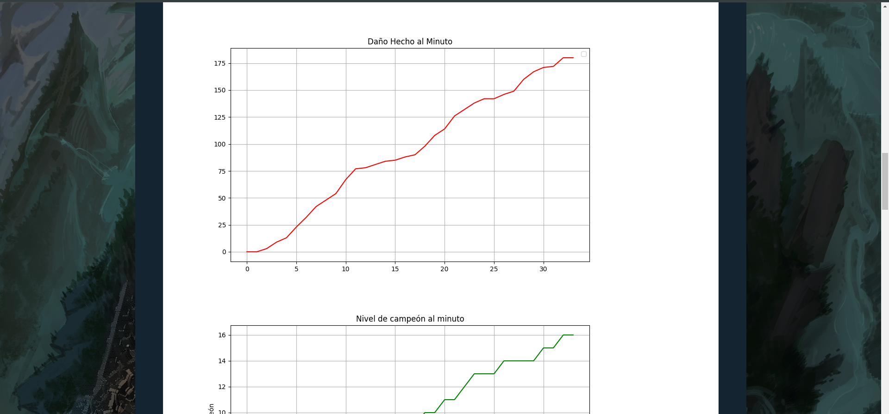
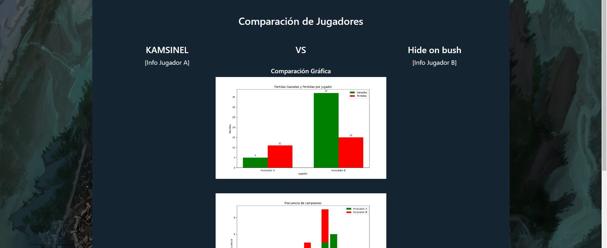

¿Qué es League of Data?
League of Data es una innovadora aplicación diseñada para los entusiastas del popular juego en línea League of Legends. Su principal función es encontrar a los Invocadores, los jugadores del juego, y proporcionarles información detallada sobre sus últimas partidas. Esto permite a los usuarios obtener un análisis exhaustivo de su rendimiento en el juego.
---Con nuestra aplicacion puedes---
Buscar Invocadores:
Puedes ingresar algún Invocador para ver datos estadisticos como su perfil y estadisticas
la últimas partidas de la Temporada Actual además de cada partida con su información Estadística.
**Solo se encontrarán los invocadores que hayan jugado partidas clasificatorias y tengan
asignada una división en la temporada actual**
Al Buscar podrás ver todas la Información obtenida del Invocador en cuestión Tal como División, Partidas Ganadas/Perdidas y más.

Podrás ver también las Ultimas Partidas Jugadas por el Invocador con todo Detalle Campaeón Utilizado, KDA, Daño Infligido/Recibido son algunos de los Datos Obtenidos

Cada partida con sus respectivos Gráficos Generados en el momento, apreciando de esta manera la evolución de los números durante el trasncurso de la partida


Comparar Invocadores:
Compara Invocadores para ver sus Fortalezas y Debilidades en la Grieta junto con Datos Gráficos para una comparación directa entre ambos Invocadores

League of Data no solo es una herramienta de análisis y comparación, sino también una guía estratégica para los jugadores de League of Legends que buscan superarse y alcanzar nuevos niveles de competencia en el juego. Con su enfoque detallado y personalizado, esta aplicación se convierte en un aliado indispensable para cualquier jugador comprometido con su progreso y éxito en League of Legends.